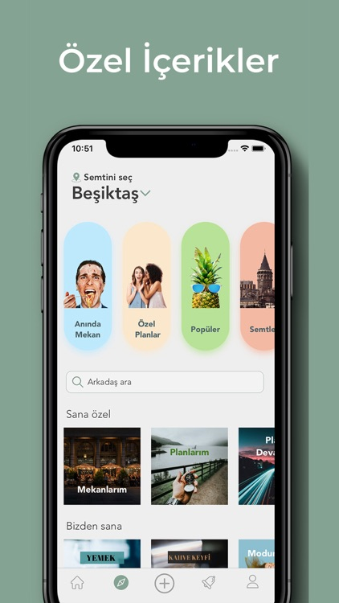
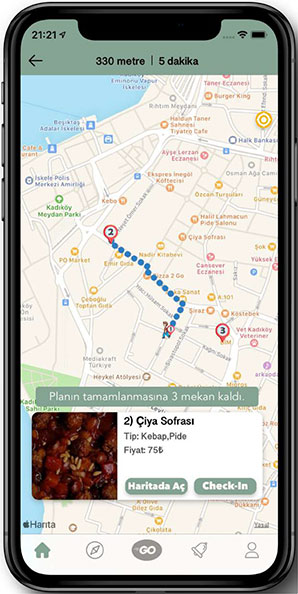
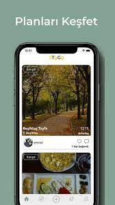

3TOGO
- Tech Stack: Swift, Python, PHP, Laravel, Selenium
- 3ToGo IOS Github URL: "You can contact me to review the source codes of the project"
- 3ToGo Backend Github URL: "You can contact me to review the source codes of the project"
- 3ToGo Scripts Github URL: "You can contact me to review the source codes of the project"
Are you one of those who say what to do today?
"3ToGo" is an initiative we started while studying at university. First of all, I want to talk about our work. "3ToGo" is an application that allows people to quickly make personalized travel plans in their spare time. You can choose the plans prepared by the users and start browsing quickly, or you can create your own plan and share it with people.
In this venture, I first took part in the IOS Developer position. After releasing the MVP of the front-end part of the application, we expanded the team and continued to develop our application with new IOS Developers. After a certain time, I created the services of the application with pure PHP to complete the deficiencies in the back-end part, and then I developed scraping crawling scripts(for google maps, yandex images, cinema and restaurant websites...) for dynamic pages using the selenium library to eliminate the data deficiency of the application. Our team has grown in this process and has become 12 people, 2 people for IOS, 2 people for Android, and 2 people for back-end. In order to improve the services I created, it was revised with Laravel and developed in accordance with the microservice infrastructure. I have led my technical team (CTO position) for the last 6 months.
In addition, we tried to develop our initiative with the support and collaborations we gained from various competitions and incubation centers (ING innovation center, BTM incubation center, ITU core incubation center).
We started the initiative in February 2019 and ended in August 2020.
The roles I took in this venture:- IOS Development
- Back-end development
- Data collecting (scraping, crawling)
- CTO
It is currently not available in the AppStore. You can contact us for the application video.
